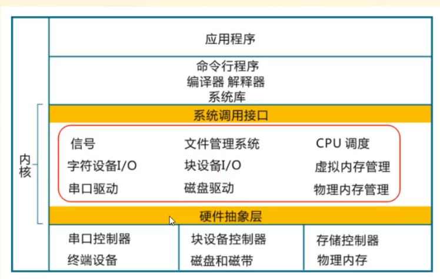
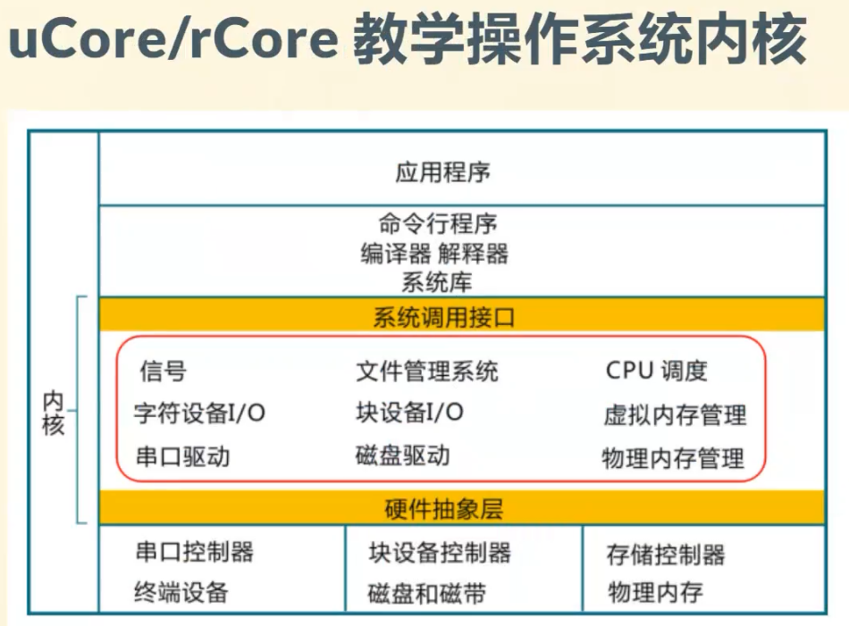
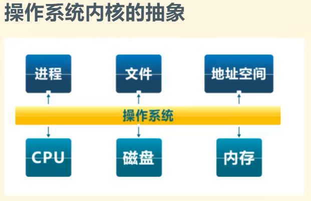
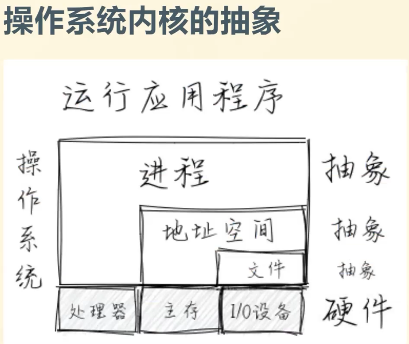
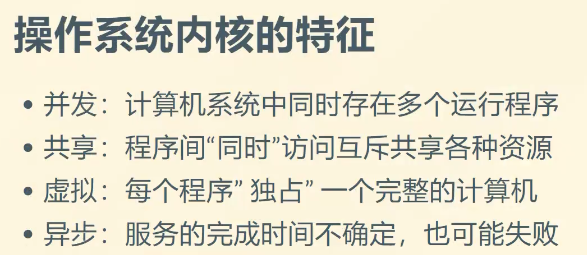
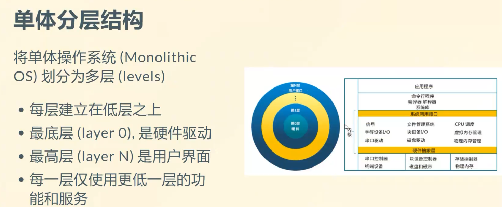
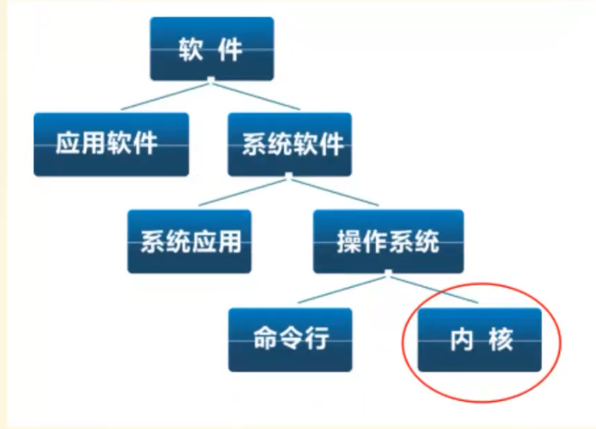
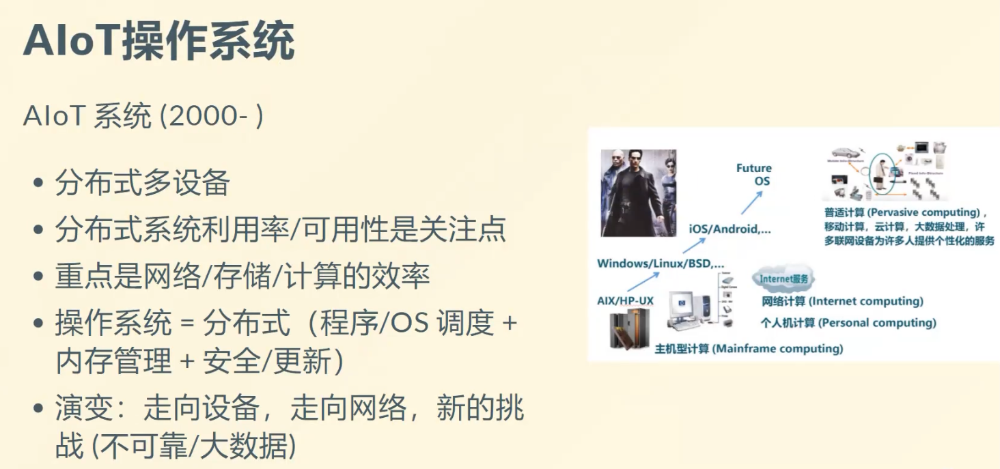

rCore: lab0
相关资源
lab0-0讲解视频笔记
操作系统三座大山
- 虚拟化
- 并发
- 持久化
OS原理与设计思想
- 操作系统结构：如下图
- 中断及系统调用：区别于一般应用程序开发的线性思维
- 内存管理：操作系统对内存的申请、释放的封装
- 进程管理：如何有效地管理一堆同时运行的程序
- 处理机调度
- 同步互斥
- 文件系统
- IO子系统：对更多外设的支持

我们的教学用操作系统是一个类Unix操作系统，单内核。


- 将CPU抽象成进程。将CPU的计算资源划分为不同的时段来共享。 进程实际上是对CPU的一种抽象
- 文件是对数据的一种抽象。磁盘是用于长期存储，内存在掉电之后数据就会丢失。而我们要使用磁盘中的数据，就需要先将数据读取到内存中；保存的时候也需要将数据从内存保存到磁盘中。而我们对磁盘以及内存的访问方式不同：磁盘通过一个个扇区进行访问；内存则是可以直接读取一个个字节。为了在更高的层面上忽略这样的不同，就抽象出了“文件”的概念，用于统一数据在内存与磁盘上的读写。
- 地址空间则是对内存的抽象。这个地址空间实际上是一种虚拟的、抽象的。实际内存可能只有8M但是地址空间可能会提供4G的空间的地址，远超过实际内存。这样做就是让程序在执行的时候不必担心内存不够用的情况。而实际使用的时候，我们只会将一些比较“活跃”的数据读取到内存中，通过这种方式来虚拟出N多的内存。

应用程序以进程的方式运行，操作系统给这个进程提供一个完整的虚拟环境，让进程以为自己使用的是一个完整的计算机资源一样。
这是一种抽象，进程不需要去关心多个进程之间如何分配资源。那是整个操作系统负责管理的事情。
比如说，内存有8M的空间，虚拟出了4G的地址空间，分配了1G的空间给进程A使用，那么它使用的内存就不能超过1G。 CPU 则是按照时间进行资源的分配。


参考书练习题
- 什么是操作系统
操作系统是管理计算机硬件资源、控制程序运行、改善人机界面和为应用软件提供支持的一种系统软件。在硬件和软件之间起到承上启下的作用。
“支持”并“控制”程序运行，比较公平地分配程序运行资源。如果一个软件对其他软件，或其他某一类软件的运行提供支持，都可以说是操作系统。
除了上面的比较泛化的解释，还有一种理解：运行在特权模式下的一种软件。
操作系统是一个资源管理程序
- 应用与硬件之间的中间层
- 管理各种软硬件资源
- 访问软硬件资源的服务
- 解决访问冲突，确保公平使用
操作系统中的软件分类
- Shell：命令行接口
- GUI：图形用户接口
- Kernel：操作系统的内部

现在随着5G的发展，设备之间的互联更加高效、快速。出现了一种AloT操作系统。它应用于分布式的多设备集群之上，借助5G网络带来的高度通信能力进行信息交流。

All articles in this blog are licensed under CC BY-NC-SA 4.0 unless stating additionally.